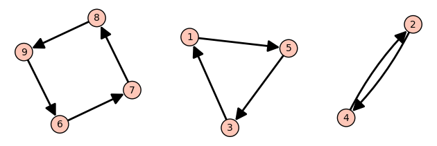
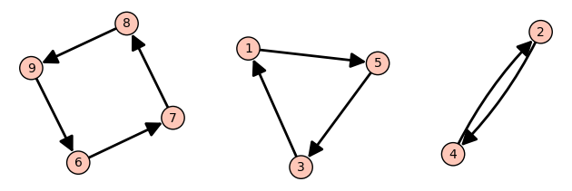
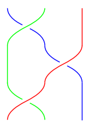
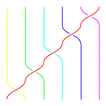
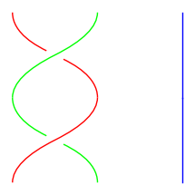
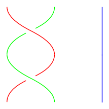

π = Permutation([5,4,1,2,3,7,8,9,6])
π.to_digraph().plot(vertex_size=1500)
Let’s look at a longer permutation now: \(541237896\). As in Section 3.2, we can view this as a function where \(1\) goes to \(5\), \(2\) goes to \(4\) etc. Following the path of a single number we get a cycle: \(1\) goes to \(5\) goes to \(3\) goes to \(1\). Likewise \(2\) goes to \(4\) goes to \(2\). And so on.
The entire permutation can be broken up into cycles:
π = Permutation([5,4,1,2,3,7,8,9,6])
π.to_digraph().plot(vertex_size=1500)
The cycle \(1 \to 5 \to 3 \to 1\) can be written as \((153)\). In general, \((a_1,\dots,a_n)\) represents the cycle \(a_1 \to a_2 \to \dots \to a_n \to a_1\). We often ommit the commas when every number is a single digit.
Here is how to compute the cycles in SageMath:
π.cycle_string()'(1,5,3)(2,4)(6,7,8,9)'The answer is given as a product (i.e. composition) of cycles.
Elements which do not go anywhere—also called fixed-points—are represented by cycles of length \(1\) E.g. \((123)(4)\) represents the two cycles \(1 \to 2 \to 3 \to 1\) and \(4 \to 4\). We often ommit length \(1\) cycles from the notation so \((123)(4) = (123)\) as a permutation of \(1,2,3,4\).
Exercise 4.1 Compute the cycle decomposition for \(341859672\). You can verify your answer in SageMath.
Note: as mentioned earlier: SageMath ommits the cycle \((5)\) representing the fixed point \(\pi(5) = 5\).
Another visual representation used frequently in the mathematical study of knots is that of crossing lines. Let’s look at an example:
B.<a,b> = BraidGroup(3)
plot(a * b * a)
This represents a permutation where the first end ends up in the third position (\(1 \to 3\)), the second end ends up in the second position (\(2 \to 2\)) and the third end ends up in the first position (\(3 \to 1\)). Overall, \(1\) and \(3\) are swapped, so this permutation is \((13)\).
Cycles of length \(2\) are called transpositions. E.g. \((14)\) is a transposition which switches \(1\) and \(4\). The picture above represents a composition of \(3\) transpositions \((13) = (12)(23)(12)\).
Theorem 4.1 (Product of transpositions)
Another way to say this is that by swapping pairs of elements at a time, we can obtain any possible shuffle.
Proof. We know that a permutation may be written in terms of cycles. So if we can show that any cycle can be written as a successive sequence of swaps we are good. We will give a visual demonstration of this fact:
B.<t1,t2,t3,t4,t5> = BraidGroup(6)
plot(t1 * t2 * t3 * t4 * t5)
So the cycle \((123456) = (12)(23)(34)(45)(56)\). Remember that compositions are read from right to left: e.g. \((f \circ g)(i) = f(g(i))\) means first do \(g\) then do \(f\).
This kind of decomposition generalizes: you can replace \((123456)\) with any cycle of any length. E.g. \((1456) = (14)(45)(56)\) although one more reminder that products in SageMath are backwards from the function composition standpoint:
S = SymmetricGroup(6)
S((5,6)) * S((4,5)) * S((1,4))(1,4,5,6)For an alternative proof, this decomposition into a sequence of adjacent swaps is exactly how the sorting algorithm BubbleSort works. We can sort any list using BubbleSort which does only adjacent swaps. So the shuffle is obtained by reversing those swaps to go from sorted to shuffled.
You may have noticed in what we did, the word “braid” was used. Braids are similar to permutation except that we keep track of which strand goes above and which strand goes below. E.g. the transposition \((12)\) applied twice looks like
B.<a,b> = BraidGroup(3)
plot(a * a)
As a permutation this is the trivial shuffle \(123\). But as a braid it is still twisted.
While we are only focused on permutations rather than braids here, we still make use of braids because SageMath is able to create diagrams for us.
The generators of the braid group are adjacent swaps. So the line B.<a, b> = BraidGroup(3) sets a to a swap of \(1, 2\) and sets b to a swap of \(2, 3\). We can obtain the reverse swap with a^-1 or b^-1
plot(a^-1 * a^-1)
When converting from braids to permutations, we ignore whether a strand goes over or under and just focus on the swapping.